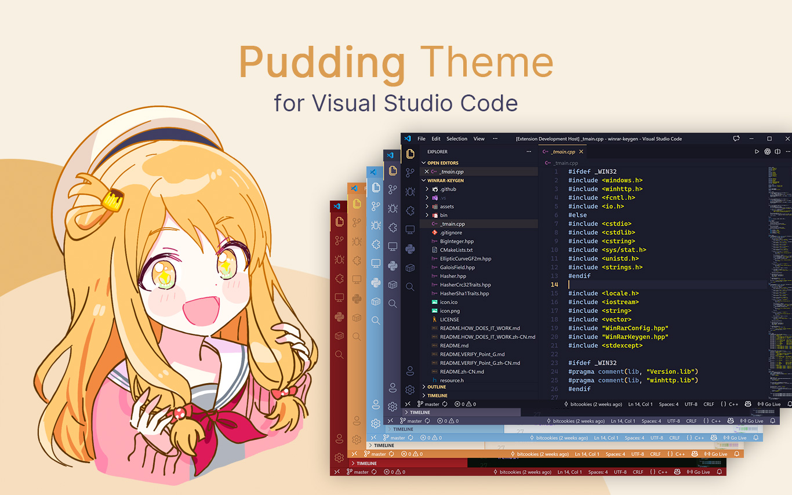
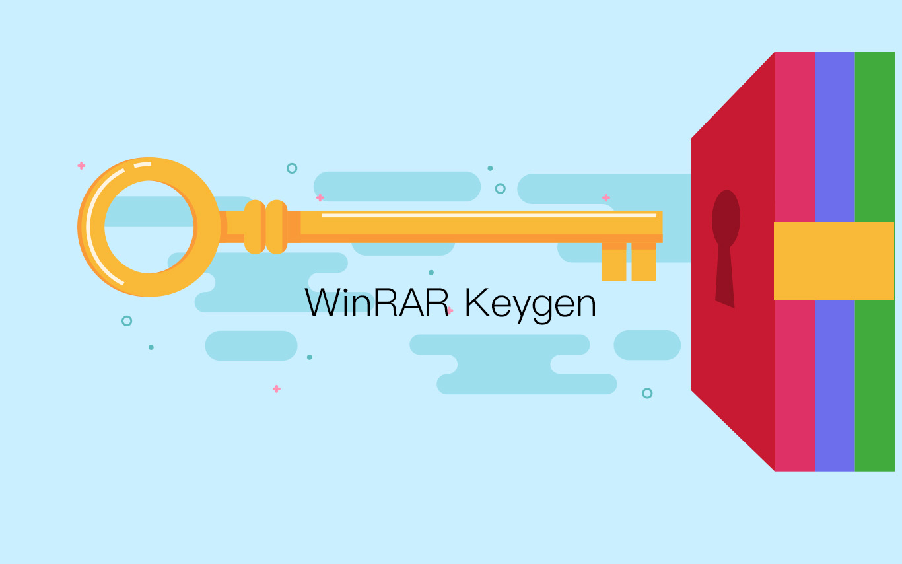
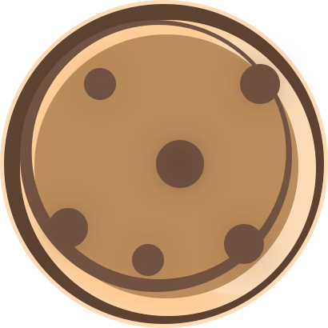
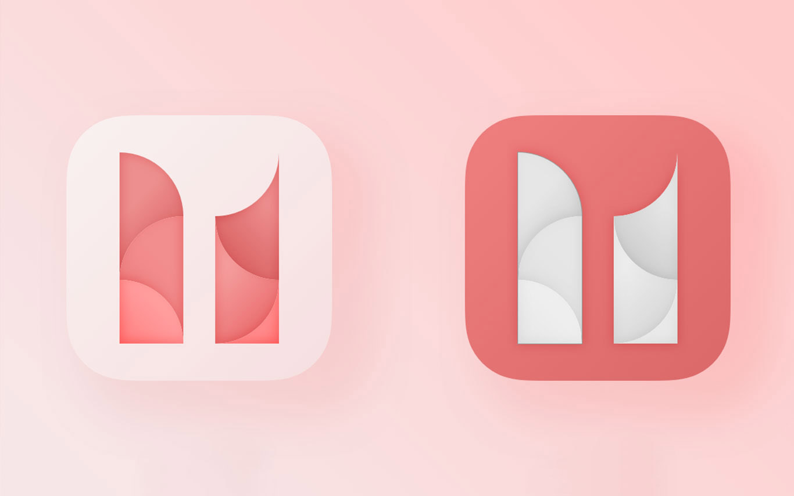
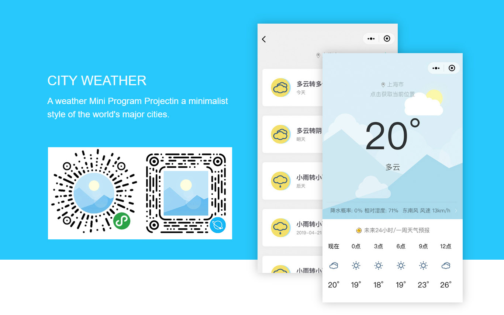
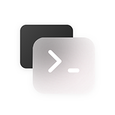
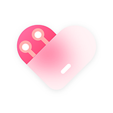

Pudding VSCode Theme
A Pudding-inspired illustration color theme for Visual Studio Code.
Developer
ONing

The Visual Studio Code Pudding Theme currently comes in several colorways, Light and Dark Themes.
A Pudding-inspired illustration color theme for Visual Studio Code.
Developer
ONing

The Visual Studio Code Pudding Theme currently comes in several colorways, Light and Dark Themes.
A Frosted Glass Style Theme of WinRAR.
Developer
ONing

This is a theme suitable for WinRAR. It is designed according to the icon style of Windows 11 and has been frosted to make the whole bald scoop look more transparent and bright.
Principle of WinRAR key generation.
Developer
ONing

WinRAR is not a free software. If you want to use it, you should pay to RARLAB and then you will get a license file named rarreg.key. This repository will tell you how WinRAR license file rarreg.key is generated.

Bitcookies is my creative brand for developing and sharing software, plugins, themes, and games.
You can view and download all Bitcookies' here :-)
My personal work website and blog.

My original campus comics release Web & Mini Program.
A weather Mini Program Project in a minimalist style of the cities.

My development blog.

My Machine Learning blog.

I'm ONing, a PhD candidate working on deep learning, AI agents, simulation, and digital twins. I hold a master's degree in computer science, where my research focused on platform development and data retrieval.
You can view and download these software, themes and extensions in this repo.